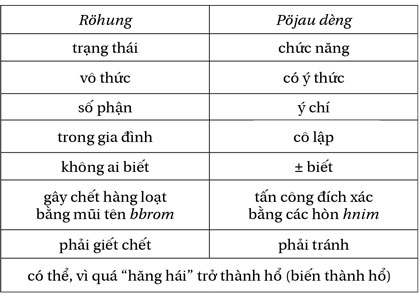

Kinh doanh không phải là khoa học hay nghệ thuật. Nó là môn thực hành.
– Peter Drucker
Nguyên tắc cuối cùng là Nguyên tắc Quy mô.
Nguyên tắc này đòi hỏi hệ thống tạo dựng giá trị bền vững phải được nhân rộng thông qua độ phủ rộng và độ sâu trong khi vẫn tạo ra lợi nhuận.
Bốn thành phần quan trọng của nó là:
1. Hệ thống giá trị bền vững
2. Khả năng nhân rộng
3. Độ phủ rộng và độ sâu
4. Tạo ra lợi nhuận
Đầu tiên, sản phẩm của bạn phải dần tạo thành hệ thống giá trị bền vững thỏa mãn cả bốn nguyên tắc trước (Kiểm soát, Rào cản, Thời gian, Nhu cầu).
Thứ hai, hệ thống tạo dựng giá trị bền vững phải được nhân rộng, hay dễ dàng sao chép thành nhiều đơn vị, vị trí hoặc chuỗi. Tối ưu nhất, sự nhân rộng này có thể mở rộng ra thành hàng trăm, hàng ngàn hoặc hàng triệu đơn vị. Ví dụ, phần mềm dễ dàng nhân rộng sao chép ra nhiều bản. Tương tự với trang web thu hút gia tăng số lượng người dùng. Diễn đàn của tôi có hơn một trăm ngàn lượt truy cập hàng tháng. Trong mười năm, trang web trước đây của tôi phục vụ hàng triệu lượt truy cập. Sản phẩm hữu hình như sách cũng có thể dễ dàng sao chép nhân rộng; tôi có thể in dễ dàng mười ngàn hoặc một triệu cuốn sách.
Thứ ba, sự nhân rộng này phải có độ phủ rộng hoặc độ sâu. Đa số nghĩ rằng quy mô phải là có độ phủ đến hàng triệu hay hàng tỷ người. Tuy nhiên, quy mô cũng có thể thông qua độ sâu hay sức ảnh hưởng của bạn. Ví dụ, bạn cung cấp nhà cho hai mươi hộ gia đình (không có độ phủ rộng), nhưng bạn tạo ra quy mô ở mức độ sâu. Chuỗi mười nhà hàng bán thực phẩm sạch cũng là một ví dụ về quy mô ở mức độ sâu.
Thêm một ví dụ nữa, một doanh nhân trên diễn đàn của tôi tìm kiếm và thương lượng các nguồn nguyên vật liệu cho các công ty và cả cho chính phủ. Doanh nghiệp của anh không có độ phủ rộng nhưng có độ sâu – chỉ cần vài khách hàng là anh ta có thể kiếm được hàng triệu đô-la. Bên cạnh đó, khách hàng của anh có mức độ hoạt động trên độ phủ rộng, vì thế bằng cách gián tiếp, anh ta tạo ra độ phủ rộng. Ngoài việc thừa nhận phải làm “việc không thích”, anh đã tạo ra độ sâu. Anh viết:
Nếu việc này vẫn còn tiếp diễn, tôi vẫn phải làm những gì tôi không muốn. Tôi không nghĩ việc này sẽ tạo ra sự thay đổi cho ai. Tham dự hội chợ trong bốn ngày tạo ra ý nghĩa bởi vì bất kỳ ai tham dự đều có thể đưa ra quyết định trị giá bảy con số (đô-la). Tôi sẽ không lãng phí thời gian của mình.
Ngược lại, nếu bạn có thể phát minh ra hộp đựng thức ăn thân thiện với môi trường, bạn có thể nhân rộng thông qua số lượng. Chỉ cần một phần ba các nhà sản xuất thực phẩm dùng sản phẩm của bạn là bạn có thể nghỉ hưu sớm.
Phần thứ tư là có thể tạo ra lợi nhuận. Mô hình khởi nghiệp UNSCRIPTED là về lợi nhuận, không phải trong mười năm mà là ngay trong năm đầu tiên. Ngày nay, quá nhiều doanh nghiệp tự cho mình là thành công chỉ đo bằng mức độ tăng trưởng. Rất nhiều doanh nghiệp không tạo ra lợi nhuận trong nhiều năm. Đa số doanh nghiệp khởi nghiệp trong lĩnh vực công nghệ tạo ra giá trị và sức ảnh hưởng. Nhưng vấn đề là họ không tạo ra lợi nhuận trong nhiều năm.
Amazon là một ví dụ về việc tạo ra sức ảnh hưởng lớn nhưng lại chưa có lời. Hãy nhớ, bán tờ 100 đô-la với giá 50 đô-la không phải là điều chúng ta muốn. Hãy để những gã nhà giàu ở Silicon Valley làm điều đó.
Mục đích của bạn là tự do lựa chọn làm những gì bạn muốn, điều đó đồng nghĩa với việc tạo ra lợi nhuận ngay. Và nếu bạn muốn làm startup khởi nghiệp công nghệ, hãy làm điều đó sau khi đã có được sự tự do tài chính.
Với vai trò là nhà sản xuất, chúng ta kinh doanh để phục vụ khách hàng – không phải một mà là số lượng lớn. Tuy nhiên, trước khi ảnh hưởng đến đại chúng, chúng ta phải gây ảnh hưởng đến từng người một – và làm thế một cách có lợi nhuận. Nếu bạn có thể gây ảnh hưởng đến một người nhưng vẫn có lời và hệ thống giá trị bền vững của bạn có thể nhân rộng, chúc mừng bạn, bạn đang đi đúng hướng.
Ví dụ, với mỗi cuốn sách bán ra, tôi lời được khoảng 6 đô-la. Tôi chỉ cần bán vài trăm cuốn là đạt điểm hòa vốn. Sau đó, mỗi cuốn bán ra tiếp theo sẽ tạo ra lợi nhuận. Tương tự như thế, mỗi thành viên mới trên diễn đàn của tôi trị giá 1 đô-la. Với trang web của tôi trước đây, mỗi thành viên đáng giá cả ngàn đô-la. Mỗi đô-la tôi dành cho quảng cáo mang về cho tôi 4 đô-la, với 2 đô-la là lợi nhuận.
Khi gây ảnh hưởng đến nhiều người mà vẫn tạo ra lợi nhuận, thu nhập của bạn (và cả cuộc đời bạn) có bước nhảy vọt. Một cách lý tưởng, doanh nghiệp của bạn nên tạo ra ảnh hưởng đủ lớn để có thể tạo ra sự thay đổi cho cuộc đời bạn. Nếu bạn có phần mềm đem đến giải pháp cho các bệnh viện, bạn có được quy mô về độ sâu. Nếu các chủ doanh nghiệp dùng sản phẩm của bạn, bạn có được quy mô về độ phủ rộng.
Quy mô của thị trường tạo ra giới hạn cho chúng ta. Nếu sản phẩm của bạn có giá 20 đô-la và khách hàng mục tiêu là một chuyên gia Internet có xe Corvette thì quy mô thị trường là rất nhỏ. Vận động viên bơi lội tham gia Thế vận hội không tập luyện trong bồn tắm. Bạn phải nhắm đến thị trường có quy mô đủ rộng để tạo ra thu nhập đủ lớn để có thể thay đổi cuộc đời.
ĐỊNH HƯỚNG MỞ RỘNG
Nguyên tắc toán học đằng sau Nguyên tắc Quy mô là giá trị mong đợi. Nó là xác suất thành công từ rất nhiều sự kiện ngẫu nhiên.
Nó được tính bằng cách xem xét xác suất tỷ lệ thành công – dĩ nhiên là tỷ lệ càng cao càng tốt. Ví dụ, có năm ngàn vé số bán ra giá 10 đô-la cho phần thưởng là chiếc xe mới trị giá 25 ngàn đô-la. Bạn có nên tham gia? Nếu năm ngàn vé được bán hết, nhà cái thu về 50 ngàn đô-la và đút túi tiền lời 25 ngàn đô-la. Có nghĩa là cho dù bạn chơi kiểu gì, nhà cái sẽ luôn thắng.
Trong thực tế cuộc sống, kết quả được đánh giá dựa trên cơ hội và rủi ro. Ví dụ, bạn xem xét hai công ty sau đây. Công ty A bán thẻ từ cho các doanh nghiệp địa phương. Công ty B bán dịch vụ phần mềm trò chơi giáo dục đầu tư thông qua tương tác trực tuyến. Công ty A có khả năng thành công là 86% trong khi của B là 57%. Khả năng thất bại của B là cao gấp ba lần A.
Trong trường hợp lý tưởng, A kiếm được lợi nhuận 5 ngàn đô-la một tháng, trong khi của B là 1 triệu đô-la một tháng. Nếu được chọn để khởi nghiệp kinh doanh, bạn sẽ chọn doanh nghiệp nào?
Dù B có khả năng thành công thấp hơn, nhưng kết quả của nó sẽ khiến thay đổi hoàn toàn cuộc đời bạn. Hay theo như Mark Cuban nói, bạn chỉ cần đúng một lần trong kinh doanh.
SẴN SÀNG CHO THẤT BẠI
Để xác suất thành công xảy ra, bạn cần phải gia tăng tần suất thử. Trong khởi nghiệp kinh doanh, tôi gọi nó là làm quen với thất bại.
Hằng ngày, tôi đều có thể dự đoán được thất bại khi nhìn thấy những bài bình luận kiểu này trên diễn đàn của mình:
Thử một lần?
Làm ơn! Đừng mơ mộng hão huyền. Khởi nghiệp kinh doanh không phải là thứ để thử. Nếu bạn khởi nghiệp với cách nghĩ đó, tôi chắc chắn bạn sẽ thất bại. Thử một lần thì xác suất thành công của bạn là rất rất nhỏ.
Trong kinh doanh, tần suất nghĩa là tiếp tục thử nhiều lần bất chấp thất bại. Và nếu bạn muốn có thành công càng lớn, thì hãy sẵn sàng cho hàng loạt thất bại trước khi có điều kỳ diệu xảy ra.
Với cá nhân tôi, tôi gặp vô vàn thất bại trước khi tìm được cơ hội đổi đời. Thất bại là một phần của cuộc chơi này. Hãy sẵn sàng chờ đón nó. Những bài học từ thất bại chính là mục đích của chúng ta. Bạn trưởng thành, phát triển thông qua thất bại và từ đó gia tăng tỷ lệ thành công.
GIẢI ĐỘC ĐẮC TRỊ GIÁ 250 ĐÔ-LA
Khởi nghiệp không hề dễ dàng. Làm chủ doanh nghiệp còn khó khăn hơn.
Tôi chắc chắn với bạn rằng cho dù bạn kinh doanh trong lĩnh vực gì, sẽ luôn có rất nhiều thử thách chờ đón bạn. Rắc rối và khó khăn là một phần trong hành trình này, và nó đòi hỏi bạn phải nỗ lực không ngừng.
Nếu cái giá của nó quá đắt như thế, tại sao bạn nên khởi nghiệp?
Giả sử mọi thứ diễn ra theo ý bạn, kết quả tốt nhất là gì? Ăn một bữa ra trò hay tự do trên bãi biển?
Vào năm 1997, tôi có cơ hội mua lại một công ty cho thuê xe Limousine ở Chicago, Illinois. Tôi phân tích thử và quyết định không mua lại. Thước đo để đánh giá chính là lợi nhuận từ công ty này. Nếu mọi thứ hoàn hảo thì kết quả của nó chỉ đủ để sống qua ngày trong khi vẫn phải cắm mặt làm việc.
Vài năm sau, tôi quyết định theo đuổi công ty dịch vụ Internet của mình bởi vì nếu thành công, tôi sẽ không buộc phải làm việc một ngày nào nữa.
Ý của tôi ở đây là đằng nào bạn cũng phải bỏ công sức ra, chấp nhận rủi ro vô chừng, vậy thì tại sao không hướng đến cái kết bạn muốn? Liệu bạn có mua vé số chỉ để trúng 250 đô-la? Bạn không thể đánh đổi công sức của mình chỉ để lấy cái kết làng nhàng. Kinh doanh để giúp đời, nhưng trước hết nó phải giúp thay đổi cuộc đời bạn.
TRONG NGẮN HẠN, HÃY QUÊN NÓ ĐI
Mở rộng quy mô giống như là trồng rừng. Làm nhỏ nghĩa là trồng cây. Và nếu bạn không sẵn lòng trồng một cây, bạn sẽ không thể tạo ra một khu rừng – đây là một trong những sai lầm kinh điển tôi đã từng mắc phải. Trong nhiều năm, tôi muốn làm theo quy luật ảnh hưởng: ảnh hưởng triệu người, bạn thành triệu phú. Nếu có bí mật nào để giàu có cả về vật chất và tinh thần thì chính là nó. Càng mang giá trị hữu ích đến nhiều người, dù là gián tiếp hay trực tiếp, bạn càng giàu có và mãn nguyện.
Tuy thế, nó không phải là con đường bằng phẳng. Tôi đã chứng kiến nhiều doanh nhân bế tắc trước quy luật này. Kết quả là họ bỏ cuộc.
Họ cứ nghĩ là cơ hội này không thể mở rộng và kết quả là không làm gì cả. Hãy nhớ là quy luật ảnh hưởng bắt đầu từ một người. Nếu không thể mang giá trị đến cho một người, làm sao bạn có thể nhân rộng nó ra?
Mục tiêu dài hạn của bạn là gây ảnh hưởng đến càng nhiều người càng tốt. Tuy nhiên, trong ngắn hạn, giống như Nguyên tắc Thời gian, hãy quên nó đi. Bắt đầu từ một người thông qua sản phẩm xuất sắc và quy mô sẽ tự động nhân rộng.
BA CHIẾN LƯỢC MỞ RỘNG
Bạn có thể mở rộng quy mô của bất kỳ thứ gì: dịch vụ giặt là, cửa hàng bán lẻ, cho thuê nhà… Câu hỏi là “Mức độ khó của nó như thế nào?”.
Có ba chiến lược để nhân rộng, mỗi cái có thử thách riêng.
1. MỞ RỘNG THÔNG QUA BÁN SỐ LƯỢNG LỚN
Chiến lược phổ biến là bán hàng trực tiếp đến khách hàng thông qua số lượng lớn. Chiến lược này bị giới hạn bởi quy mô thị trường. Ví dụ, một trang web bán dụng cụ tennis sẽ bị giới hạn bởi lượng khách hàng là số lượng người chơi tennis. Bên cạnh đó, một tiệm sửa giày tại địa phương sẽ bị giới hạn bởi lượng khách hàng tại khu vực đó. Ngoài ra, nó còn bị giới hạn bởi số lượng nhân viên và khả năng có thể hoàn thành công việc theo giờ.
Những cửa hàng kinh doanh truyền thống thường rất khó mở rộng nhưng các doanh nghiệp kinh doanh trực tuyến trên mạng thì dễ hơn – và do đó cạnh tranh khốc liệt hơn.
2. MỞ RỘNG THÔNG QUA CHUỖI, NHƯỢNG QUYỀN
Nhiều người thường xuyên hỏi tôi: “Cơ hội nào tốt nhất?”. Khi tôi không bàn gì đến Internet hay ứng dụng trên điện thoại là họ cảm thấy sốc. Trên diễn đàn của tôi có một khu vực dành để liệt kê các ý tưởng kinh doanh. Tôi có viết một số ý tưởng và đa số đều là dựa trên cách kinh doanh truyền thống.
Có rất nhiều cơ hội nằm ở kinh doanh truyền thống vì rất nhiều người, đặc biệt là các bạn trẻ, không xem xét nó vì họ chỉ tập trung đến hệ thống sản phẩm, dịch vụ số. Đừng bỏ qua những cơ hội ngon ăn này chỉ vì nó không dễ mở rộng. Cơ hội vẫn có cho bạn từ chiến lược mở rộng này: đó là chiến lược mở rộng bằng cách bán hàng qua nhiều kênh khác nhau, gồm cả nhượng quyền, chuỗi và bán hàng theo mạng lưới.
Đây là một trong những chiến lược tôi dùng để bán sách của mình. Bất cứ khi nào tôi bán bản quyền dịch thuật, tôi tạo ra một kênh bán hàng mới. Đến ngày hôm nay, tôi có mười giấy phép bản quyền và bán sách đến các thị trường: Trung Quốc, Hàn Quốc, Ý… Ngoài phí bản quyền, tôi còn nhận được phần trăm từ doanh thu.
Bạn có bao giờ nghĩ một quán cà phê nhỏ ở Seattle có thể trở thành một chuỗi lớn nhất thế giới? Khi Howard Schultz mua lại chuỗi quán cà phê Starbucks nhiều năm trước, ông tìm thấy cơ hội mở rộng bằng cách nhân rộng chuỗi cửa hàng. Tương tự với Fred Deluca phát triển Subway lên hơn ba mươi bảy ngàn cửa hàng thông qua chính sách nhượng quyền.
Khi một cửa hàng trở nên xuất sắc và sinh lời, bạn có thể mở rộng nó theo chiến lược chuỗi hoặc nhượng quyền. Đây là cách các thương hiệu kinh doanh truyền thống trở nên nổi tiếng và trở thành thương hiệu quốc gia.
3. MỞ RỘNG THÔNG QUA CÁC KÊNH BÁN HÀNG
Chiến lược mở rộng cuối cùng là bán hàng gián tiếp bằng số lượng lớn thông qua các đại lý hoặc các kênh bán lẻ.
Trong chương 34, tôi có đề cập đến Sal Paola với phát minh ra miếng phủ cọ để giúp cho việc sơn tường trở nên thuận tiện và gọn gàng hơn. Ban đầu, chiến lược của anh là bán hàng trực tiếp thông qua trang web của mình. Tuy nhiên, sau khi xuất hiện trong chương trình Shark Tank , hoạt động kinh doanh của anh phát triển bùng nổ. Lý do là vì anh thêm vào các kênh phân phối: Home Depot, Sherwin-Williams và hàng trăm cửa hàng bán lẻ trên toàn thế giới.
Tương tự như thế, 99% doanh thu bán sách của tôi đến từ chiến lược này – bán lẻ không chỉ qua trang web cá nhân mà còn thông qua Amazon, ACX, Kobo, Kindle, iTunes, đại lý, siêu thị bán lẻ và toàn bộ các kênh bán sách thông qua hệ thống giá trị bền vững. Công việc của tôi là dùng những công cụ này để hỗ trợ quảng bá. Và khi sản phẩm được đánh giá tốt, doanh thu sẽ nhanh chóng gia tăng.
Đa số các sản phẩm hữu hình (như thực phẩm, quần áo) mở rộng thông qua chiến lược này. Vấn đề là bạn phải thuyết phục được các chủ đại lý và các kênh bán lẻ. Liệu sản phẩm của bạn có nhu cầu cao? Biên độ lợi nhuận lớn? Có đáng công sức bỏ ra để chiếm kệ trong cửa hàng?
Những cuộc thương lượng kiểu này thường kéo dài nhiều tháng. Ngoài ra, sản phẩm của bạn còn phải tuân thủ hàng loạt các quy định, chính sách do họ đưa ra. Nhưng đừng để những điều này làm bạn chùn bước vì cơ hội vẫn có và nó xứng đáng với công sức bạn bỏ ra.
Ngoài ra còn có các kênh khác rất dễ. Bạn gần như có thể bán bất cứ thứ gì hợp lệ trên Amazon, Etsy và Ebay.
2.740 đô-la
Con số 2.740 đô-la có ý nghĩa gì với bạn? Có thể không có ý nghĩa gì cả.
Tuy thế, nó là con số ma thuật. Con số này là lợi nhuận trung bình hàng ngày cần thiết để giúp bạn trở thành triệu phú sau một năm. Và khi bạn chia nhỏ con số này theo toán học, bạn sẽ thấy sự mở rộng quy mô không nhàm chán như bạn nghĩ.
Tôi không nghĩ người bình thường hiểu được tầm quan trọng của Nguyên tắc Quy mô trong làm giàu. Đối với họ, mở rộng quy mô có nghĩa là mua thêm chứng khoán hoặc đầu tư thêm vào quỹ. Bàn đến đòn bẩy là họ sẽ nghĩ ngay đến những khoản nợ rủi ro.
Ví dụ, bạn tạo ra sản phẩm tuyệt vời và bán hàng trên mạng xã hội. Giả sử biên độ lợi nhuận là 25 đô-la trên một sản phẩm. Nếu bạn bán được một trăm mười sản phẩm mỗi ngày, xin chúc mừng! Bạn vừa chạm ngưỡng khả năng trở thành triệu phú chỉ sau một năm.
Hãy suy nghĩ về điều này. Con số 25 đô-la và một trăm mười sản phẩm không phải là con số lớn, nhưng nó đủ để giúp bạn đổi đời chỉ sau một năm. Thậm chí là với tôi, hiện đang gần như là về hưu, mỗi ngày thu nhập của tôi đều vượt qua con số 2.740 đô-la.
Tuy thế, Nguyên tắc Thời gian và Nguyên tắc Quy mô thường dẫn đến hiểu lầm là dùng để làm giàu nhanh. Mong ước trở thành triệu phú khiến rất nhiều người mờ mắt không nhìn thấy cơ hội tiềm năng ngay trước mắt. Tương tự như khi đi học, bạn học các lớp theo từng cấp độ. Và bạn không thể kiếm được tiền triệu nếu không học được cách kiếm được tiền trăm.
Mở rộng quy mô là quá trình cần thời gian và nỗ lực.
Bây giờ, làm sao để đưa những nhận thức, kiến thức này vào hành động?
Bước kế tiếp trong mô hình khởi nghiệp UNSCRIPTED là: Thực thi xuất sắc (Kinetic Execution, KE).
Năm nguyên tắc trong chiến lược khởi nghiệp này cần một hành trình dài để tạo dựng. Nếu bạn đã từng khởi nghiệp kinh doanh và thất bại, hãy thử dùng năm nguyên tắc này để phân tích xem nguyên nhân vì sao.
